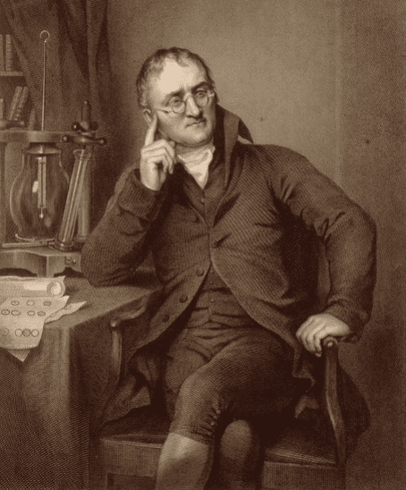

Hukum Dasar Kimia · Dalton
Law of Multiple Proportions · John Dalton · 1803
Definisi
Hukum Perbandingan Berganda menyatakan bahwa jika dua unsur dapat membentuk lebih dari satu senyawa, maka perbandingan massa salah satu unsur yang bersenyawa dengan massa tetap unsur lain akan merupakan bilangan bulat sederhana.
m₁ : m₂ : m₃ = bilangan bulat sederhana
Contoh: C dan O membentuk CO (karbon monoksida) dan CO₂ (karbon dioksida)
Sang Penemu

DaltonJohn Dalton
6 Sep 1766 — 27 Jul 1844
Cumberland, Inggris
John Dalton adalah seorang kimiawan dan fisikawan Inggris yang juga dikenal sebagai pendiri Teori Atom Modern. Ia lahir dalam keluarga Quaker sederhana di Cumberland dan sebagian besar belajar secara autodidak.
Selain hukum perbandingan berganda, Dalton juga dikenal karena penelitiannya tentang buta warna (yang dinamai Daltonisme sesuai namanya), serta formulasi Hukum Tekanan Parsial Gas.
Karyanya "A New System of Chemical Philosophy" (1808) menjadi salah satu buku ilmu pengetahuan paling berpengaruh abad ke-19, meletakkan fondasi pemahaman atom sebagai unit terkecil materi.
Visualisasi Hukum
Karbon (C) + Oksigen (O): Dua Senyawa Berbeda
Data Perbandingan
| Senyawa | Massa C (g) | Massa O (g) | Rasio O (C tetap=12g) | Perbandingan Bulat |
|---|---|---|---|---|
| Karbon Monoksida (CO) | 12 | 16 | 16 | 1 |
| Karbon Dioksida (CO₂) | 12 | 32 | 32 | 2 |
| Rasio | — | — | 16 : 32 | 1 : 2 ✓ |
Linimasa Dalton
"Atom-atom dari unsur yang sama identik satu sama lain dalam semua hal, dan berbeda dari atom unsur lain dalam massa dan sifatnya."
— John Dalton, A New System of Chemical Philosophy, 1808
Rangkuman